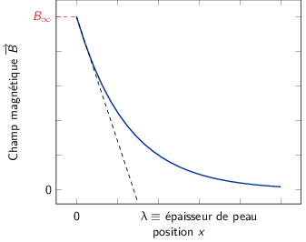

TD4 : Magnétostatique
1 Introduction
En magnétostatique, les équations locales deviennent
\begin{align*} \div\vv{B} &= 0\\ \rot\vv{B} &= \mu_0\vv{j} \end{align*}soit, dans leurs versions intégrales
\begin{align*} \iint_\mathcal{S}\vv{B}.\vv{\d S} &= 0\\ \oint_\mathcal{C}\vv{B}.\vv{\d\ell} &= \mu_0I_\mathcal{C}(\text{courant enlacé}) \end{align*}Le potentiel vecteur \(\vv{A}\) est lié au champ magnétique par la relation \(\vv{B}=\rot\vv{A}\), le vecteur potentiel étant, par ailleurs, à flux conservatif \(\div\vv{A}=0\) (jauge de Coulomb). On déduit ainsi l'équation vectorielle de Poisson \(\vv{\Delta}\vv{A}=-\mu_0\vv{j}\) soit
\begin{align*} \vv{A}(M)&=\frac{\mu_0}{4\pi}\iiint\frac{\vv{j}(P)}{PM}\,\d\tau\\ \vv{B}(M)&=\frac{\mu_0}{4\pi}\iiint\frac{\vv{j}(P)\times\vv{PM}}{PM^3}\,\d\tau=\frac{\mu_0}{4\pi}\oint_\mathcal{C}\frac{I\vv{\d\ell}\times\vv{PM}}{PM^3} \end{align*}2 Solénoïde fini
Soit un solénoïde de longueur \(L\), constitué de \(N\) spires jointives identiques de rayon \(R\) parcourues par un courant \(I\). On note \(n\) le nombre de spires par unité de longueur. L'origine \(O\) est choisie au centre de la bobine et l'axe de la bobine est \(Oz\).
- Quelle est la direction du champ magnétique \(\vv{B}\) en tout point de l'axe de la bobine ?
Les plans \((xMz)\) et \((yMz)\) sont tous deux plans d'antisymétrie de la distribution de courant : le champ magnétique pour tout point \(M\) appartenant à l'axe \(Oz\) est compris dans chacun de ces plans soit \(\vv{B}(M\in Oz)\parallel\vv{u}_z\).
- On se place cette fois en un point quelconque, qui ne se trouve pas nécessairement sur l'axe \(Oz\). De par les symétries, quel système de coordonnées serait il judicieux d'employer ? En utilisant ce système, quelles sont les composantes non nulles de \(\vv{B}\)? De quelles variables dépendent ces composantes ?
En raison des symétries du problème, le système de coordonnées cylindriques est le mieux adapté à la description du problème. En particulier, le système est invariant par rotation d'angle θ et le plan \((\vv{u}_r,\vv{u}_z)\) est plan d'antisymétrie : \(\vv{B}(M)=B_r(r,z)\vv{u}_r+B_z(r,z)\vv{u}_z\).
- Montrer que \(B_r(r,z)\) est une fonction impaire de \(z\), alors que \(B_z(r,z)\) est une fonction paire de \(z\).
Symétrie du champ magnétique

Le plan \((xOy)\) est plan de symétrie de la distribution de courant impliquant
\begin{align*} B_z(r,z)&=B_z(r,-z)\\ B_r(r,z)&=-B_r(r,-z) \end{align*}- Calculer le champ en tout point de l'axe \(Oz\). Vérifier la parité prévue par la question 3. On suppose \(L\gg R\), montrer que le champ magnétique \(\vv{B}\) au point \(O\) est le double de celui du point situé à l'extrémité, c'est-à-dire en \(z=L/2\).
Calcul du champ magnétique généré par une boucle de courant

Loi de Biot & Savart
\begin{align*} \vv{B}(M)&=\frac{\mu_0I}{4\pi}\oint_\mathcal{C}\frac{\vv{\d\ell}\times\vv{PM}}{PM^3}\\ &\text{où }\left\{ \begin{array}{rl} \vv{\d\ell} &=R\d\theta\,\vv{u}_\theta\\ \vv{PM} &=\vv{PO} + \vv{OM} = -R\vv{u}_r + z\vv{u}_z \\ \end{array} \right.\\ &\text{soit }\vv{\d\ell}\times\vv{PM}=\left| \begin{array}{l} 0\\Rd\theta\\0 \end{array} \right.\times\left| \begin{array}{l} -R\\0\\z \end{array} \right.=R\d\theta z\vv{u}_r+R^2\d\theta\vv{u}_z \end{align*}En raison des symétries invoquées à la question 1), le champ magnétique est colinéaire au vecteur \(\vv{u}_z\) d'où
\begin{align*} \vv{B}(M)&=\frac{\mu_0I}{4\pi}\,\frac{R^2}{PM^3}\int_0^{2\pi}\d\theta\vv{u}_z\\ &=\frac{\mu_0I}{2}\,\frac{R^2}{PM^3}\vv{u}_z\text{ avec } PM=\frac{R}{\sin\alpha}\\ &=\frac{\mu_0I}{2}\,\frac{\cancel{R^2}}{R^{\cancel{3}}}\,\sin^3\alpha\,\vv{u}_z=\frac{\mu_0I}{2R}\,\sin^3\alpha\,\vv{u}_z \end{align*}Pour calculer le champ magnétique généré par un solénoïde fini, on superpose les champs magnétiques générés par les \(N\) spires. En considérant une épaisseur \(dz'\) contenant donc \(n\times dz=\frac{N}{L}\times dz'\) spires, le champ magnétique ainsi généré a pour expression
\begin{align*} \vv{dB}_\text{solénoïde}(M)&=\vv{B}_\text{spire}(M)\times n\times\d z'\\ \vv{B}_\text{solénoïde}(M)&=\int_{-L/2}^{L/2}\frac{\mu_0nI}{2R}\,\sin^3\alpha\d z'\vv{u}_z \end{align*}La coordonnée \(z\) est reliée à l'angle α par l'expression \(\tan\alpha=\frac{R}{z-z'}\) d'où \(\frac{\d z'}{\d\alpha}=\frac{R}{\sin^2\alpha}\) 1.
la dérivée de \(\frac{1}{\tan\alpha}\) est égale à
\begin{align*} \left(\frac{1}{\tan\alpha}\right)'&=\left(\frac{\cos\alpha}{\sin\alpha}\right)'\\ &=-\frac{\sin\alpha}{\sin\alpha}-\frac{\cos^2\alpha}{\sin^2\alpha}\\ &=-\left(1+\frac{\cos^2\alpha}{\sin^2\alpha}\right)=-\frac{1}{\sin^2\alpha} \end{align*}Sachant que
\begin{align*} \cos\alpha_1&=\frac{z+L/2}{\surd R^2+\left(z+L/2\right)^2}=f(z)\\ \cos\alpha_2&=\frac{z-L/2}{\surd R^2+\left(z-L/2\right)^2}=-f(-z) \end{align*}le champ magnétique sur l'axe du solénoïde devient
\begin{align*} \vv{B}_\text{solénoïde}(M)&=\frac{\mu_0nI}{2}\left(f(z)+f(-z)\right)\,\vv{u}_z \end{align*}confirmant la parité de \(B_z\) avec \(\vv{B}(z)=\vv{B}(-z)\).
en \(z=0\),
\begin{align*} \vv{B}(O)&=\frac{\mu_0nI}{2}\left(\frac{L/2}{\surd R^2+L^2/4}+\frac{L/2}{\surd R^2+L^2/4}\right)\,\vv{u}_z\\ &=\frac{\mu_0nI}{2}\left(\frac{1}{\surd R^2+L^2/4}\right)\,\vv{u}_z\text{ avec }L\gg R\\ &=\frac{\mu_0nIL}{2}\left(\frac{1}{L/2\times\left(1+4R^2/L^2\right)^{1/2}}\right)\,\vv{u}_z\\ &\simeq\frac{\mu_0nI\cancel{L}}{\cancel{2}}\times\frac{\cancel{2}}{\cancel{L}}\,\vv{u}_z+\mathcal{O}\left(\frac{R^2}{L^2}\right)\\ &\simeq\mu_0nI\,\vv{u}_z \end{align*}en \(z=L/2\),
\begin{align*} \vv{B}(z=L/2)&=\frac{\mu_0nI}{2}\times\frac{L}{\surd R^2+L^2}\,\vv{u}_z\\ &\simeq\frac{\mu_0nI}{2}\times\frac{\cancel{L}}{\cancel{L}}\,\vv{u}_z=\frac{\vv{B}(O)}{2} \end{align*}
On veut maintenant étudier le champ magnétique \(\vv{B}\) au voisinage du point \(O\), c'est-à-dire lorsque \(z\) et \(r\) sont tous les deux très inférieurs aux deux grandeurs \(L\) et \(R\). Établir les approximations suivantes :
\begin{align*} B_z(r,z)&=B_z(0,0)+ar+br^2+cz^2\\ B_r(r,z)&=drz \end{align*}Calculer les constantes \(a,b\) et \(d\) en fonction de \(c\). Comment peut-on calculer la constante \(c\) ? Exprimer \(c\) en fonction \(N\), \(L\) et \(R\). En déduire l'expression approximative de \(\vv{B}\) au voisinage du point \(O\).
Champ magnétique au voisinage de \(O\). On réalise un dévelopement limité à l'ordre 2 de \(B_z\) et \(B_r\) soit
\begin{align*} &\begin{array}{llll} B_z(r\to0,z\to0)&\simeq B_z(0,0)&+\left.\frac{\partial B_z}{\partial r}\right|_{r=0,z=0}r&+\left.\frac{\partial B_z}{\partial z}\right|_{r=0,z=0}z\\ &&+\left.\frac{\partial^2 B_z}{\partial r^2}\right|_{r=0,z=0}\frac{r^2}{2!}&+\left.\frac{\partial^2 B_z}{\partial z^2}\right|_{r=0,z=0}\frac{z^2}{2!}\\ &&+\left.\frac{\partial^2 B_z}{\partial r\partial z}\right|_{r=0,z=0}rz&+\mathcal{O}(r^2,z^2) \end{array}\\ &B_z(r,z)\simeq B_z(0,0) + \alpha_r\,r + \beta_r\,r^2 + \gamma_z\,z + \delta_z\,z^2 + \eta_{rz}\,rz+\mathcal{O}(r^2,z^2)\\ &B_r(r,z)\simeq B_r(0,0) + \alpha'_r\,r + \beta'_r\,r^2 + \gamma'_z\,z + \delta'_z\,z^2 + \eta'_{rz}\,rz+\mathcal{O}(r^2,z^2) \end{align*}Calcul de \(B_r\) :
\(B_r(0,0)=0\) et \(B_r(r,z)=-B_r(r,-z)\) i.e. une fonction impaire en \(z\) implique nécessairement que \(\delta'_z=0\). Par ailleurs, la parité de la fonction conduit à l'équation suivante
\begin{align*} \alpha'_r\,r+\beta'_r\,r^2+\cancel{\gamma'_z\,z}+\cancel{\eta'_{rz}\,rz}&=-\alpha'_r\,r-\beta'_r\,r^2+\cancel{\gamma'_z\,z}+\cancel{\eta'_{rz}\,rz}\\ \alpha'_r&=\beta'_r=0 \end{align*}L'expression de \(B_r\) se réduit à \(\gamma'_z\,z+\eta'_{rz}\,rz\) or \(B_r(0,z)=0\) implique que \(\gamma'_z=0\) d'où
\begin{align*} B_r(r,z)=\eta'_{rz}\,rz=drz \end{align*}Calcul de \(B_z\) :
La parité de \(B_z\) i.e. \(B_z(r,z)=B_z(r,-z)\) implique que les termes "impairs" en \(z\), \(\gamma_z\) et \(\eta_{rz}\), soient nuls. L'expression de \(B_z\) se limite à
\begin{align*} B_z(r,z)&=B_z(0,0)+\alpha_r\,r+\beta_r\,r^2+\delta_z\,z^2\\ &=B_z(0,0)+ar+br^2+cz^2 \end{align*}Calcul de \(a,b,d\) en fonction de \(c\) :
On utilise les équations de Maxwell faisant intervenir le champ magnétique à savoir \(\div\vv{B}=0\) et \(\rot\vv{B}=\vv{0}\) (au voisinage de \(O\), il n'y a pas de courant ni de variation temporelle d'un champ électrique)
\begin{align*} \div\vv{B}&=0\\ \frac{1}{r}\,\frac{\partial}{\partial r}\left(rB_r\right)+\frac{\partial B_z}{\partial z}&=0\\ \frac{1}{r}\times2dzr+2cz&=0\\ d&=-c \end{align*} \begin{align*} \rot\vv{B}&=\vv{0}\\ \frac{\partial B_r}{\partial z}-\frac{\partial B_z}{\partial r}&=0\\ dr-a-2br&=0\\ a=0&\text{ et }b=\frac{d}{2}=-\frac{c}{2} \end{align*}Calcul de \(c\) :
Pour calculer la constante \(c\), on évalue sa valeur pour \(r=0\) i.e. sur l'axe du solénoïde où nous avons établi que \(B_z=\frac{\mu_0nI}{2}\left(f(z)+f(-z)\right)\) avec \(f(z)=\frac{L/2+z}{\surd R^2+\left(L/2+z\right)^2}\). On a donc
\begin{align*} B_z(0,z)=B_z(0,0)+cz^2=\frac{\mu_0nI}{2}\left(f(z)+f(-z)\right) \end{align*}Sachant que \(L\gg z\) et \(R\gg r\), il s'agit dès lors de développer l'expression de \(f(z)\) au voisinage de zéro. On calcule ainsi
\begin{align*} \left(R^2+\left(L/2+z\right)^2\right)^{-1/2}&=\left(R^2+L^2/4+Lz+z^2\right)^{-1/2}\\ &=\left(R^2+L^2/4\right)^{-1/2}\left[1+\underbrace{\frac{z^2}{R^2+L^2/4}+\frac{Lz}{R^2+L^2/4}}_{\epsilon}\right]^{-1/2} \end{align*}or
\begin{align*} \left(1+\epsilon\right)^n=1+n\epsilon+\frac{n(n-1)}{2!}\,\epsilon^2+\mathcal{O}(\epsilon^2) \end{align*}on obtient finalement
\begin{align*} \left(R^2+\left(L/2+z\right)^2\right)^{-1/2}&=\left(R^2+L^2/4\right)^{-1/2}\,\left[1-\frac{1}{2}\frac{Lz+z^2}{R^2+L^2/4}+\frac{3}{8}\left(\frac{Lz+z^2}{R^2+L^2/4}\right)^2\right] \end{align*}La fonction \(f(z)\) devient au deuxième ordre en \(z\)
\begin{align*} f(z)&\simeq\frac{L/2\left(1+\frac{2z}{L}\right)}{\surd R^2+L^2/4}\left[1-\frac{1}{2}\,\frac{Lz}{R^2+L^2/4}-\frac{1}{2}\frac{z^2}{R^2+L^2/4}+\frac{3}{8}\frac{L^2z^2}{\left(R^2+L^2/4\right)^2}\right] +\mathcal{O}(z^2) \end{align*} \begin{align*} \begin{split} f(z)\simeq\frac{L}{2}\,\frac{1}{\surd R^2+L^2/4}\left[1-\frac{1}{2}\,\frac{Lz}{R^2+L^2/4}\right.&-\frac{1}{2}\,\frac{z^2}{R^2+L^2/4}+\frac{3}{8}\,\frac{L^2z^2}{\left(R^2+L^2/4\right)^2}\\ +\frac{2z}{L}&\left.-\frac{z^2}{R^2+L^2/4}\right]+\mathcal{O}(z^2) \end{split} \end{align*} \begin{align*} f(z)&\simeq\frac{L}{2}\,\frac{1}{\surd R^2+L^2/4}\left[1+\frac{2z}{L}-\frac{1}{2}\,\frac{Lz}{R^2+L^2/4}-\frac{3}{2}\,\frac{z^2}{R^2+L^2/4}+\frac{3}{8}\,\frac{L^2z^2}{\left(R^2+L^2/4\right)^2}\right]+\mathcal{O}(z^2)\\ f(-z)&\simeq\frac{L}{2}\,\frac{1}{\surd R^2+L^2/4}\left[1-\frac{2z}{L}+\frac{1}{2}\,\frac{Lz}{R^2+L^2/4}-\frac{3}{2}\,\frac{z^2}{R^2+L^2/4}+\frac{3}{8}\,\frac{L^2z^2}{\left(R^2+L^2/4\right)^2}\right]+\mathcal{O}(z^2) \end{align*} \begin{align*} f(z)+f(-z)&\simeq\frac{L}{2}\,\frac{1}{\surd R^2+L^2/4}\left[2-3\,\frac{z^2}{R^2+L^2/4}+\frac{3}{4}\,\frac{L^2z^2}{\left(R^2+L^2/4\right)^2}\right]+\mathcal{O}(z^2) \end{align*}Le champ magnétique \(B_z\) se réduit à l'expression
\begin{align*} B_z(0,z)&\simeq\frac{\mu_0nI}{2}\times\frac{L}{2}\times\frac{1}{\surd R^2+L^2/4}\left[2-\left(\frac{3}{R^2+L^2/4}-\frac{3}{4}\,\frac{L^2}{\left(R^2+L^2/4\right)^2}\right)\,z^2\right]\\ &\simeq B_z(0,0)+cz^2 \end{align*}d'où
\begin{align*} B_z(0,0)&=\frac{\mu_0nI}{2}\times\frac{L}{\surd R^2+L^2/4}\\ c&=\frac{\mu_0nI}{4}\times\frac{L}{\surd R^2+L^2/4}\left(-\frac{3}{R^2+L^2/4}+\frac{3}{4}\,\frac{L^2}{\left(R^2+L^2/4\right)^2}\right)\\ &=\frac{\mu_0nI}{4}\times\frac{L}{\surd R^2+L^2/4}\left(\frac{\cancel{3L^2}-3\times4\left(R^2+L^2/4\right)}{4\,\left(R^2+\cancel{L^2/4}\right)^2}\right)\\ &=-B_z(0,0)\times\frac{3R^2}{2\left(R^2+L^2/4\right)^2} \end{align*}soit finalement
\begin{align*} B_z(r\to0,z\to0)&=B_z(0,0)\times\left(1+\frac{3R^2}{4\left(R^2+L^2/4\right)^2}\,r^2-\frac{3R^2}{2\left(R^2+L^2/4\right)^2}\,z^2\right)\\ B_r(r\to0,z\to0)&=B_z(0,0)\times\frac{3R^2}{2\left(R^2+L^2/4\right)^2}\,rz \end{align*}
3 Supraconducteurs
3.1 Effet Meissner dans un supraconducteur
Dans toute cette partie, on s'intéresse à une boule supraconductrice de centre \(O\) et de rayon \(R\) placée dans un solénoïde très long et de section circulaire de rayon \(a\gg R\), d'axe \(z'Oz\), possédant \(n\) spires par unité de longueur, et parcouru par un courant stationnaire \(I\), le reste de l'espace étant vide. On pose \(B_\infty=\mu_0nI\).
On constate expérimentalement que la boule supraconductrice tend à expulser le champ magnétique en créant des courants localisés au voisinage de la surface (effet Meissner). Pour rendre compte de cet effet, on admettra que dans un supraconducteur, la loi d'Ohm est remplacée par la relation phénoménologique de London : \(\vv{j}=-1/(\mu_0\delta^2)\vv{A}\) où \(\vv{A}\) est un potentiel-vecteur de \(\vv{B}\) et \(\delta\) un paramètre caractéristique du matériau. On se place en régime stationnaire.
- Montrer que \(\vv{A}\) doit satisfaire à la condition \(\div\vv{A}=0\). L'unicité de \(\vv{A}\) justifie alors le caractère non arbitraire de la loi de London. Écrire les équations de la Magnétostatique dans un supraconducteur. En déduire l'équation aux dérivées partielles dont est solution \(\vv{B}\) et la dimension de \(\delta\).
L'équation de conservation de la charge se déduit de la divergence du rotationnel de \(\vv{B}\) à savoir
\begin{align*} \div\left(\rot\vv{B}\right)=\vv{\nabla}.\left(\vv{\nabla}\times\vv{B}\right)&=0\\ \mu_0\div\vv{j}+\mu_0\epsilon_0\frac{\partial}{\partial t}\div\vv{E}&=0\\ \div\vv{j}+\frac{\partial\rho}{\partial t}=0 \end{align*}En régime stationnaire, la densité volumique de charge ρ ne dépend pas du temps d'où \(\frac{\partial\rho}{\partial t}=0\). On déduit ainsi que le potentiel vecteur est à flux conservatif car
\begin{align*} \div\vv{j}=-\frac{1}{\mu_0\delta^2}\,\div\vv{A}=0\Longleftrightarrow\div\vv{A}=0 \end{align*}Les équations de la magnétostatique sont
\begin{align*} \div\vv{B}&=0\\ \rot\vv{B}&=\mu_0\vv{j} \end{align*}En appliquant de nouveau l'opérateur rotationnel à la second expression, on obtient
\begin{align*} \rot\left(\rot\vv{B}\right)&=\mu_0\rot\vv{j}\\ \cancel{\grad\left(\div\vv{B}\right)}-\Delta\vv{B}&=\cancel{\mu_0}\times-\frac{1}{\cancel{\mu_0}\delta^2}\rot\vv{A}\\ \Delta\vv{B}&=\frac{\vv{B}}{\delta^2} \end{align*}Le Laplacien faisant intervenir la dérivée seconde par rapport aux coordonnées spatiales, on déduit que la dimension de δ est celle d'une longueur.
- La symétrie sphérique étant peu propice aux solutions simples, on remplace d'abord le
problème réel par le modèle \((M')\) suivant : la sphère supraconductrice est assimilée à un
demi-espace \(x>0\); l'espace vide entre le solénoïde et la sphère est remplacée par le demi-espace
vide \(x < 0\); le solénoïde est oublié et impose uniquement la condition aux limites
\(\vv{B}(x=-\infty)=B_\infty\vv{u}_z\).
- Montrer que \(\vv{B}\) est uniforme dans le vide. Déterminer \(\vv{B}\) dans le supraconducteur en fonction de \(B_\infty,x\) et \(\delta\). Tracer le graphe de \(\vv{B}(x)\) et interpréter \(\delta\).
- Déterminer la densité volumique de courants \(\vv{j}\) en fonction de \(B_\infty,x,\mu_0\) et \(\delta\) et tracer le graphe de \(j(x)\).
- Montrer que la force totale subie par une colonne cylindrique de supraconducteur, d'axe \(\vv{u}_x\) et de section \(\d y\d z\) est de la forme \(\d\vv{F}/\d y\d z=B^2(x=0^-)/(2\mu_0)\vv{u}_x\).
- En réalite \(\delta\) est de l'ordre de 0.1 μm. Commentez l'approximation d'une sphère par un plan. Pour simplifier encore, on se propose de faire tendre \(\delta\) vers zéro. Montrer qu'alors le champ \(\vv{B}\) est discontinu et qu'il faut faire intervenir des courants superficiels : calculer leur densité \(\vv{j}_S\) en utilisant la relation de passge et vérifier que \(\vv{j}_S=\int_0^\infty\vv{j}(x)\d x\) et \(d\vv{F}/\d y\d z=(1/2)\vv{j}_S\times\vv{B}(x=0^-)\).
Pour \(x<0\), la densité volumique de courant \(\vv{j}\) est nul. On obtient ainsi \(\Delta\vv{B}=\vv{0}\). Par ailleurs, le problème est invariant par translation \(y,z\), les composantes du champ magnétique ne dépendant donc que de \(x\). On déduit ainsi que
\begin{align*} \Delta B_x&=\frac{\partial^2B_x}{\partial x^2}=0\\ \Delta B_y&=\frac{\partial^2B_y}{\partial x^2}=0\\ \Delta B_z&=\frac{\partial^2B_z}{\partial x^2}=0 \end{align*}Les composantes du champ magnétique sont donc des fonctions affines de \(x\) soit
\begin{align*} B_x&=a_xx+b_x\\ B_y&=a_yx+b_y\\ B_z&=a_zx+b_z \end{align*}On utilise à présent la condition aux limites \(\vv{B}(x\to-\infty)=B_\infty\vv{u}_z\) qui implique \(B_x(x\to-\infty)=B_y(x\to-\infty)=0\). Les coefficients \(a_{x,z}\) et \(b_{x,y}\) sont donc nuls. De plus, \(B_z(x\to-\infty)=B_\infty\) implique quant à lui que \(a_z=0\) et \(b_z=B_\infty\). Le champ magnétique dans le demi-espace vide \(x<0\) est donc uniforme et égale à \(B_\infty\vv{u}_z\).
Dans le supraconducteur \(x>0\), les invariances restent les mêmes soit les équations suivantes pour chaque composante du champ magnétique
\begin{align*} \frac{\partial^2B_x}{\partial x^2}&=\frac{B_x}{\delta^2}\\ \frac{\partial^2B_y}{\partial x^2}&=\frac{B_y}{\delta^2}\\ \frac{\partial^2B_z}{\partial x^2}&=\frac{B_z}{\delta^2} \end{align*}Les solutions de ces équations sont de la forme
\begin{align*} B_\alpha=a_\alpha\exp\left(\frac{x}{\delta}\right)+b_\alpha\exp\left(-\frac{x}{\delta}\right)\text{ où }\alpha=x,y,z \end{align*}Pour déterminer les coefficients \(a_\alpha\) et \(b_\alpha\), on utilise le fait que \(B\) doit rester fini quand \(x\to+\infty\) impliquant que \(a_\alpha\) soit nul. On utilise, par ailleurs, la continuité de la composante normale du champ magnétique à l'interface vide-supraconducteur i.e. en \(x=0\) de même que celle de la composante tangentielle en l'absence de courant de surface (du moins à ce stade de la modélisation) soit
\begin{align*} \vv{B}(x=0^-)=B_\infty\vv{u}_z\Longleftrightarrow&B_x(x=0^+)=0\to b_x=0\\ &B_y(x=0^+)=0\to b_y=0\\ &B_z(x=0^+)=0\to b_z=B_\infty \end{align*}Le champ magnétique à l'intérieur du supraconducteur est donc
\begin{align*} \vv{B}(x>0)=B_\infty\exp\left(-\frac{x}{\delta}\right)\vv{u}_z \end{align*}
δ représente l'épaisseur au delà de laquelle le champ magnétique extérieur (ici celui généré par le solénoïde) s'annule : le champ magnétique pénètre ainsi de quelques δ dans le supraconducteur → effet Meissner.
La densité volumique de courant demeure nulle dans le vide i.e. \(\vv{j}(x<0)=\vv{0}\). Dans le supraconducteur, \(\vv{j}\) s'écrit
\begin{align*} \vv{j}(x>0)&=\frac{1}{\mu_0}\,\rot\vv{B}(x>0)\\ &=\frac{1}{\mu_0}\left| \begin{array}{l} \frac{\partial}{\partial x}\\ \frac{\partial}{\partial y}\\ \frac{\partial}{\partial z} \end{array} \right.\times\left| \begin{array}{l} 0\\ 0\\ B_\infty e^{-x/\delta} \end{array} \right.\\ &=-\frac{B_\infty}{\mu_0}\frac{\partial}{\partial x}e^{-x/\delta}\vv{u}_y\\ &=\frac{B_\infty}{\mu_0\delta}\,e^{-x/\delta}\vv{u}_y \end{align*}La force de Laplace \(\d\vv{F}\) est égale à \(I\vv{\d\ell}\times\vv{B}\). En fonction de la densité volumique de courant \(\vv{j}\), son expression devient \(\d^3\vv{F}=\vv{j}\times\vv{B}\d\tau\) avec \(\d\tau=\d x\d y\d z\). Ainsi,
\begin{align*} \frac{\d^3\vv{F}}{\d y\d z}&=\vv{j}\times\vv{B}\d x\\ \frac{\d^2\vv{F}}{\d y\d z}&=\int_0^\infty\vv{j}\times\vv{B}\d x\\ &=\int_0^\infty\left| \begin{array}{l} 0\\ \frac{B_\infty}{\mu_0\delta}\,e^{-x/\delta}\\ 0\\ \end{array} \right.\times\left| \begin{array}{l} 0\\ 0\\ B_\infty\,e^{-x/\delta}\\ \end{array} \right.\d x\\ &=\int_0^\infty\frac{B^2_\infty}{\mu_0\delta}\,e^{-2x/\delta}\vv{u}_x\d x\\ &=\frac{B^2_\infty}{\mu_0\cancel{\delta}}\times(-)\frac{\cancel{\delta}}{2}\left[e^{-2x/\delta}\right]_0^\infty\vv{u}_x\\ &=\frac{B^2_\infty}{2\mu_0}\vv{u}_x=\frac{B^2(x=0^-)}{2\mu_0}\vv{u}_x \end{align*}La force par unité de surface tend à surélever le cylindre supraconducteur par rapport au plan \(x=0\) et ce en raison des courants en "surface" de ce même supraconducteur.
\(\delta\sim0.1\,\mu\text{m}\) : dans l'hypothèse où \(\delta\ll R\) seuls les premiers micromètres du supraconducteur ont une influence. La symétrie sphérique du supraconducteur n'est plus effective et le problème peut se résumer à un problème plan. Par ailleurs, si \(\delta\ll1\), le champ magnétique à l'intérieur du supraconducteur devient nul notamment en \(x=0^+\). La discontinuité de la composante tangentielle du champ magnétique étant égale à
\begin{align*} \vv{u}_x\times\left[\cancel{\vv{B}(x=0^+)}-\vv{B}(x=0^-)\right]&=\mu_0\vv{j_S}\\ -\vv{u}_x\times B_\infty\vv{u}_z&=\mu_0\vv{j_S}\\ \vv{j_S}&=\frac{B_\infty}{\mu_0}\vv{u}_y=\frac{B(x=0^-)}{\mu_0}\vv{u}_y \end{align*}Le calcul de l'intégrale de la densité de courant dans le supraconducteur s'écrit
\begin{align*} \int_0^\infty\vv{j}(x)\d x&=\frac{B_\infty}{\mu_0\delta}\int_0^\infty e^{-x/\delta}\d x\vv{u}_y\\ &=\frac{B_\infty}{\mu_0\cancel{\delta}}\times(-)\cancel{\delta}\left[e^{-x/\delta}\right]_0^\infty\vv{u}_y\\ &=\frac{B_\infty}{\mu_0}\vv{u}_y=\vv{j_S} \end{align*}La force de Laplace devient
\begin{align*} \frac{\d^2\vv{F}}{\d y\d z}&=\frac{B^2_\infty}{2\mu_0}\vv{u}_x=\frac{\vv{j_S}\times\vv{B}(x=0^-)}{2} \end{align*}
Dans la suite, on revient à la symétrie sphérique pour décrire convenablement le champ \(\vv{B}\) dans le vide, mais on suppose \(\delta=0\) pour simplifier les calculs, ce qui revient à adopter le nouveau modèle \((M'')\) :
- les champs \(\vv{B}_\text{int.},\vv{j}\) et \(\vv{A}\) sont nuls à l'intérieur de la boule supraconductrice;
- la continuité de la composante normale de \(\vv{B}\) impose la condition aux limites \(\vv{B}.\vv{n}=0\) au champ dans le vide à l'interface vide-supraconducteur;
- le supraconducteur est parcouru par des courants superficiels \(\vv{j}_S\) autorisant une discontinuité de la composante tangentielle du champ magnétique \(\vv{B}\) à sa surface;
- la boule supraconductrice subit des forces de Laplace surfaciques de la forme \(\d\vv{F}/dS=1/2\vv{j}_S\times\vv{B}\) où \(\vv{B}\) est le champ dans le vide à sa surface.
Questions:
- Écrire les équations locales dont \(\vv{B}\) est solution dans le vide. En déduire un problème de mécanique des fluides analogue et tracer l'allure des lignes de champ de \(\vv{B}\). Indiquer, sans calcul, des points où \(\|\vv{B}\|>B_\infty\) et des points où \(\|\vv{B}\| < B_\infty\).
- On cherche un potentiel scalaire \(\phi\) tel que \(\vv{B}=\grad\,\phi\). De quelle équation \((L)\) est solution \(\phi\) ? On cherche une solution de \((L)\) de la forme \(\phi=\alpha r\cos\theta+\beta\cos\theta/r^2\). Justifier, sans calcul, par des analogies électrostatiques que ces potentiels sont solutions de \((L)\). Déterminer \(\alpha\) et \(\beta\) en fonction de \(B_\infty\) et \(R\).
- En déduire \(\vv{j}_s\). Soit \(\vv{B}_S\) le champ magnétique créé par ces courants au centre \(O\) de la boule. Donner, sans calcul, sa direction. Une portion de sphère de surface \(\d S=2\pi R^2\sin\theta \d\theta\) est assimilée à une spire circulaire parcourue par un courant infinitésimal \(\d I\). Montrer que \(\d I=j_SR\d\theta\) puis calculer \(\vv{B}_S\) et commenter le "mécanisme" de l'effet Meissner.
- Calculer le moment magnétique \(\d\vv{\mathcal{M}}\) de la spire élémentaire étudiée dans la question précédente. En déduire le moment magnétique total \(\vv{\mathcal{M}}\) de la boule supraconductrice, le mettre sous la forme \(\vv{\mathcal{M}}=\chi/\mu_0\,4\pi R^3/3\,\vv{B}_\infty\) et déduire la constante \(\chi\). Le milieu est-il paramagnétique (\(\chi>0\)) ou diamagnétique \((\chi < 0)\) ?
- Montrer par une analyse de symétrie des forces \(\d\vv{F}\) que la résultante des forces de Laplace subies par la boule supraconductrice est nulle. Ce résultat était prévisible sans calculs et sans expliciter les forces \(\d\vv{F}\). Pourquoi ?
- Les champs \(\vv{B}_\text{int.}\), \(\vv{j}\) et \(\vv{A}\) sont nuls à l'intérieur de la boule
supraconductrice du fait qu'on considère à présent \(\delta=0\).
Dans le vide, \(\vv{j}=\vv{0}\) d'où \(\rot\vv{B}=\vv{0}\) et \(\div\vv{B}=0\) (\(\Delta\vv{B}=\vv{0}\)). La répartition des lignes de champ magnétique est alors identique aux lignes du champ de vitesse d'un fluide incompressible s'écoulant sur la boule2
2un fluide dont le champ vitesse \(\vv{v}\) est à rotationnel nul i.e. \(\rot\vv{v}=\vv{0}\) est dit irrotationnel. Cette propriété traduit le fait que chaque particule fluide ne tourne nullement sur elle-même et n'a donc aucune incidence sur la trajectoire des lignes de champ.

Le champ de vitesse/magnétique est ainsi plus faible à "l'équateur" i.e. en \(A\) et \(B\) où \(B_{A,B} < B_\infty\) et plus élevé aux pôles i.e. en \(C\) et \(D\) où \(B_{C,D}>B_\infty\).
Soit \(\vv{B}=\grad\,\phi\) et \(\div\vv{B}=0=\div(\grad\,\phi)=\Delta\phi\). Le potentiel scalaire \(\phi\) est donc solution de l'équation de Laplace. La forme du potentiel \(\phi(r,\theta)=\alpha r\cos\theta+\beta\cos\theta/r^2\) est identique à la solution trouvée à l'exercice "Boule uniformément polarisée" également solution de l'équation de Laplace \(\Delta V=0\) 3.
3\begin{align*} \vv{B}&=\grad\,\phi\\ &=\frac{\partial\phi}{\partial r}\vv{u_r}+\frac{1}{r}\,\frac{\partial\phi}{\partial\theta}\vv{u_\theta}+\cancel{\frac{1}{r\sin\theta}\,\frac{\partial\phi}{\partial\phi}\vv{u_\phi}}\\ &=\left(\alpha\cos\theta-2\beta\frac{\cos\theta}{r^3}\right)\vv{u_r}+\frac{1}{r}\left(-\alpha r\sin\theta-\beta\frac{\sin\theta}{r^2}\right)\vv{u_\theta}\\ &=\left(\alpha\cos\theta-\frac{2\beta\cos\theta}{r^3}\right)\vv{u_r}-\left(\alpha\sin\theta+\frac{\beta\sin\theta}{r^3}\right)\vv{u_\theta} \end{align*}une autre façon de voir les choses est de considérer le potentiel électrostatique crée par un dipôle placé au centre de la boule. Le potentiel de la forme \(\beta\cos\theta/r^2\), est également solution de l'équation de Laplace. Par ailleurs, le potentiel crée par un plan infini s'écrit \(r\cos\theta\) et est lui aussi solution de l'équation de Laplace. La somme des deux solutions justifie ainsi de la forme de la solution utilisée dans cet exercice.
Pour déterminer les constantes α et β, on utilise la continuïté de la composante normale du champ magnétique à l'interface boule supra./vide soit en \(r=R\) où
\begin{align*} \vv{u_r}.\left(\vv{B}_\text{ext.}(r=R)-\cancel{\vv{B}_\text{int.}(r=R)}\right)&=0\\ \alpha\cancel{\cos\theta}-2\beta\frac{\cancel{\cos\theta}}{R^3}&=0\\ \alpha&=\frac{2\beta}{R^3} \end{align*}Par ailleurs, loin de la boule supra. i.e. \(r\to\infty\), le champ magnétique est celui induit par le solénoïde soit \(\vv{B}(r\to\infty)=B_\infty\,\vv{u_z}\) d'où
\begin{align*} \alpha\cos\theta\,\vv{u_r}-\alpha\sin\theta\,\vv{u_\theta}&=B_\infty\vv{u_z}\\ \alpha\vv{u_z}&=B_\infty\vv{u_z}\to\alpha=B_\infty \end{align*}Le champ magnétique prend ainsi la forme suivante
\begin{align*} \vv{B}=B_\infty\cos\theta\left(1-\frac{R^3}{r^3}\right)\,\vv{u_r}-B_\infty\sin\theta\left(1+\frac{R^3}{2r^3}\right)\,\vv{u_\theta} \end{align*}La densité surfacique de courant se déduit de la discontinuïté de la composante tangentielle du champ magnétique soit
\begin{align*} \vv{u_r}\times\left(\vv{B}_\text{ext.}(r=R)-\cancel{\vv{B}_\text{int.}(r=R)}\right)&=\mu_0\,\vv{j_S}\\ \underbrace{\vv{u_r}\times\vv{u_\theta}}_{\vv{u_\phi}}\,\left(-B_\infty\sin\theta\left(1+\frac{1}{2}\right)\right)&=\mu_0\,\vv{j_S}\\ \vv{j_S}&=-\frac{3}{2\mu_0}B_\infty\sin\theta\,\vv{u_\phi} \end{align*}
Figure 5: Distribution du courant à la surface de la boule supraconductrice
Les courants surfaciques "tournent" autour de la sphère et sont proportionnels au sinus de l'angle θ : la densité de courant est ainsi nulle aux pôles et maximale à l'équateur.
En raison des symétries de la distribution de courant, tout plan contenant l'axe \(Oz\) est plan d'antisymétrie : le champ \(\vv{B_S}\) induit par la distribution de courant de surface est donc colinéaire à \(\vv{u_z}\).
Pour rappel, la densité volumique de courant \(\vv{j}\) est proportionnel à un courant \(I\) par unité de surface. Aussi, une densité surfacique de courant \(\vv{j_S}\) est proportionnelle à un courant par unité de longueur : \(\d I=j_S\,\d\ell\) où \(\d\ell\) est égal à \(R\d\theta\). Le courant est ainsi égal au "flux" de la densité de courant surfacique au travers d'un élément de longueur longitudinal \(R\d\theta\). En partant du champ magnétique induit par une spire de courant
\begin{align*} \d\vv{B}_\text{spire}=\frac{\mu_0\,\d I}{2R_\text{spire}}\sin^3\theta\vv{u_z} \end{align*}Dans notre cas, le rayon de la spire est une fonction de l'angle zénithal θ i.e. \(R_\text{spire}=R\sin\theta\). Le champ magnétique crée par la spire est
\begin{align*} \d\vv{B_S}&=\frac{\mu_0 j_SR\,\d\theta}{2R\sin\theta}\sin^3\theta\,\vv{u_z}\\ \vv{B_S}&=-\frac{3}{4}B_\infty\int_0^\pi\sin^3\theta\d\theta\,\vv{u_z} \end{align*}En posant \(x=\cos\theta\), \(\d x=-\sin\theta\,\d\theta\) avec \(x\in[1,-1]\) d'où
\begin{align*} \vv{B_S}&=-\frac{3}{4}B_\infty\,\vv{u_z}\int_0^\pi\sin^2\theta\sin\theta\,\d\theta\\ &=-\frac{3}{4}B_\infty\,\vv{u_z}\int_0^\pi(1-\cos^2\theta)\sin\theta\,\d\theta\\ &=-\frac{3}{4}B_\infty\,\vv{u_z}\int_1^{-1}(1-x^2)(-)\d x\\ &=-\frac{3}{4}B_\infty\,\vv{u_z}\left[x-\frac{x^3}{3}\right]_{-1}^1\\ &=-\frac{3}{4}B_\infty\,\vv{u_z}\left(2-\frac{2}{3}\right)=-B_\infty\,\vv{u_z} \end{align*}L'effet Meissner traduit le fait que le supraconducteur "excité" par le champ magnétique externe i.e. celui généré par le solénoïde, réagit en faisant circuler des courants superficiels de telle sorte que \(|B_\text{supra}|=B_\text{solénoïde}\).
Le moment magnétique \(\mathcal{M}\) d'un circuit fermé \(\mathcal{C}\) correspond au produit de l'intensité du courant \(I\) parcourant cette boucle par la surface orientée et délimitée par cette même boucle
\begin{align*} \d\vv{\mathcal{M}}=I\vv{\d S} \end{align*}Dans notre problème, une spire parcourue par un courant \(\d I=j_SR\d\theta\) et de rayon \(R\sin\theta\) aura un moment magnétique \(d\vv{\mathcal{M}}_\text{spire}=\d I\,\pi(R\sin\theta)^2\,\vv{u_z}\). Le moment magnétique total de la boule est alors
\begin{align*} \vv{\mathcal{M}}_\text{boule}&=\int_0^\pi\pi R^2j_S\,R\d\theta\sin^2\theta\,\vv{u_z}\\ &=-\frac{3\pi R^3}{2\mu_0}\,B_\infty\,\vv{u_z}\int_0^\pi\sin^3\theta\,\d\theta\\ &=-\frac{3\pi R^3}{2\mu_0}\,B_\infty\vv{u_z}\times\frac{4}{3}\\ &=-\frac{2\pi R^3}{\mu_0}\,B_\infty\,\vv{u_z}\\ &=-\frac{4\pi R^3}{3}\times\frac{3}{2\mu_0}\vv{B_\infty} \end{align*}soit une susceptibilité magnétique égale à \(\chi_m=-\frac{3}{2}\). Un supraconducteur est donc un matériau diamagnétique c'est-à-dire un matériau qui soumis à un champ magnétique externe, génére un autre champ magnétique opposé (dans notre cas, également de même intensité).
Dans la première partie de l'exercice, nous avons montré que la force de Laplace induite par une densité surfacique de courant est égale à \(\frac{\d\vv{F}}{\d S}=\frac{1}{2}\vv{j_S}\times\vv{B}\). Nous avons donc
\begin{align*} \frac{\d\vv{F}}{\d S}&=\frac{1}{2}\left| \begin{array}{l} 0\\0\\j_S \end{array} \right.\times\left| \begin{array}{l} B_r\\B_\theta\\0 \end{array} \right.=\frac{j_S}{2}\left(-B_\theta\,\vv{u_r}+B_r\,\vv{u_\theta}\right) \end{align*}En surface de la sphère i.e. \(r=R\), la composante radiale du champ est nulle \(B_r=0\) d'où
\begin{align*} \frac{\d\vv{F}}{\d S}&=-\frac{j_S}{2}B_\theta\,\vv{u_r}\\ &=-\frac{1}{2}\times(-)\frac{3}{2\mu_0}B_\infty\sin\theta\times(-)B_\infty\sin\theta\times\frac{3}{2}\,\vv{u_r}\\ &=-\frac{9}{8\mu_0}B^2_\infty\sin^2\theta\,\vv{u_r} \end{align*}
3.2 Lévitation supraconducteur-supraconducteur
Dans toute cette partie, on adopte le modèle macroscopique \((M'')\) et on admet en outre que les supraconducteurs sont localement neutres. On envisage le dispositif suivant : un supraconducteur de masse \(m\), en forme d'anneau plat, est placé au-dessus d'un supraconducteur occupant le demi-espace \(z < 0\), à une distance \(h\) de l'anneau.
- Montrer que \(\vv{E}=\vv{0}\) dans les supraconducteurs. En déduire que le flux de \(\vv{B}\) à travers le disque \(\mathcal{C}\) s'appuyant sur le bord interne de l'anneau est une constante indépendante du temps que l'on notera \(\phi\).
Les supraconducteurs de même que l'espace vide sont localement neutres d'où \(\rho=0\) impliquant que le potentiel électrique \(V\) soit solution de l'équation de Laplace \(\Delta V=0\). Sacahnt que le potentiel électrique est nul à l'infini \(V(\infty)=0\), le potentiel est donc nul en tout point \(M\) de l'espace. Par ailleurs, le vecteur-potentiel \(\vv{A}\) étant nul dans le supraconducteur, le champ électrique \(\vv{E}_\text{supra.}=-\grad V-\frac{\partial \vv{A}}{\partial t}=\vv{0}\).
La loi de Faraday lie la variation temporelle du flux magnétique \(\Phi_B\) à la circulation du champ électrique autour d'un contour \(\mathcal{C}\). En prenant pour contour \(\mathcal{C}\) un cercle de même axe que l'anneau supra. et de rayon légèrement supérieur à \(a\), on obtient
\begin{align*} -\frac{d\Phi_B}{dt}&=\oint_\mathcal{C}\vv{E}.\vv{\d\ell}=0 \end{align*}Le flux magnétique au travers de l'anneau supra. est donc constant.
- On suppose pour simplifier que \(\vv{B}=B(r)\vv{u}_r\) dans une zone située entre les deux supraconducteurs à une distance \(r\) de l'axe de l'anneau comprise entre le rayon interne \(a\) et le rayon externe \(b\). Exprimer \(B(r)\) en fonction de \(r,\phi\) et \(h\). À quelle(s) condition(s) l'hypothèse simplificatrice vous paraît-elle correcte ?
En supposant \(\vv{B}=B(r)\vv{u_r}\), le flux du champ magnétique au travers d'une surface fermée est nul soit
\begin{align*} \div\vv{B}=0\Longleftrightarrow\varoiint_\mathcal{S}\vv{B}.\vv{\d S}&=0\\ \iint_\text{\(\unicode{x2460}\)}B(r)\times\d S+\underbrace{\iint_\text{\(\unicode{x2461}\)}\vv{B}.\vv{\d S}}_{\Phi_B}&=0\\ B(r)\times2\pi rh+\Phi_B=0&\to B(r)=-\frac{\Phi_B}{2\pi rh} \end{align*}où \(\unicode{x2460}\) correspond à la surface cylindrique de rayon \(r\) entre les deux supraconducteurs. La surface \(\unicode{x2461}\) correspond au flux magnétique au travers de l'anneau supra.
Le problème étant invariant par rotation θ, le champ magnétique \(\vv{B}\) s'écrit \(B_r(r,z)\vv{u_r}+B_z(r,z)\vv{u_z}\) (le plan \((\vv{u_r},\vv{u_z})\) est plan d'antisymétrie de la distribution de courant). Si \(h\ll a,b\), on peut considérer le problème comme invariant par translation selon \(z\). Le champ magnétique se limite à l'expression \(B_r(r)\vv{u_r}+B_z(r)\vv{u_z}\) et, en \(z=0\), le champ magnétique est colinéaire à la surface du plan i.e. \(\vv{B}\parallel\vv{u_r}\) d'où \(B_z(r)=0\) pour tout valeur de \(r\). Ainsi, dans la mesure où \(h\ll b\), le champ magnétique entre les supraconducteurs peut s'approximer par \(B(r)\vv{u_r}\).
- Calculer la résultante \(\vv{F}\) des forces de Laplace subies par l'anneau (on admettra que seule la face en regard du supraconducteur plan contribue). En déduire l'existence d'une position d'équilibre \(h_0\) et l'exprimer en fonction de \(\phi,b,a,\mu_0,g\) et \(m\).
L'anneau subit une pression magnétique
\begin{align*} \frac{\d\vv{F}}{\d S}=\frac{B^2}{2\mu_0}\vv{u_z}&\to\vv{F}=\frac{\Phi_B^2}{4\pi^2h^2\times2\mu_0}\int_a^b\int_0^{2\pi}\frac{\cancel{r}\d r\d\theta}{r^{\cancel{2}}}\vv{u_z}\\\\ &\vv{F}=\frac{\Phi_B^2}{8\pi^2h^2\mu_0}\times\ln\frac{b}{a}\,\vv{u_z}=\frac{\Phi_B^2}{4\pi\mu_0 h^2}\ln\frac{b}{a}\,\vv{u_z} \end{align*}L'équilibre de l'anneau est atteint lorsque la résultante des forces de Laplace \(\vv{F}\) compense le poids \(m\vv{g}\) de l'anneau soit
\begin{align*} \frac{\Phi_B^2}{4\pi\mu_0 h_0^2}\ln\frac{b}{a}&=mg\\ h_0&=\Phi_B\sqrt{\frac{1}{4\pi\mu_0 mg}\ln\frac{b}{a}} \end{align*}- Lorsque l'on perturbe faiblement cet équilibre, on constate que \(h\) varie périodiquement dans le temps. Interpréter cette observation et calculer la période \(T\).
Hors équilibre, le principe fondamental de la dynamique s'écrit
\begin{align*} \vv{F}+m\vv{g}&=m\ddot{h}\vv{u_z}\text{ avec }F=F_0=mg\text{ pour }h=h_0\\ F-F_0&=m\ddot{h} \end{align*}Pour \(h\) au voisinage de \(h_0\), la force \(F\) peut se développer sous la forme
\begin{align*} F\simeq F_0+(h-h_0)\left.\frac{\partial F}{\partial h}\right|_{h_0} \end{align*}Sachant que \(F\) est de la forme \(\frac{\alpha}{h^2}\) où \(\alpha=\frac{\Phi_B^2}{4\pi\mu_0}\ln\frac{b}{a}\), la dérivée \(\frac{\partial F}{\partial h}=-\frac{2\alpha}{h^3}\). Le mouvement de l'anneau autour de sa position d'équilibre \(h_0\) devient
\begin{align*} F-F_0\simeq -(h-h_0)\frac{2\alpha}{h_0^3}&=m\ddot{h}\\ \ddot{h}+\frac{2\alpha}{mh_0^3}(h-h_0)&=0 \end{align*}L'anneau oscille autour de sa position d'équilibre \(h_0\) à une pulsation \(\omega^2=\frac{2\alpha}{mh_0^3}\) soit
\begin{align*} \omega^2&=\frac{4\pi^2}{T^2}=\frac{2\Phi_B^2}{4\pi\mu_0mh_0^3}\ln\frac{b}{a}\\ T&=2\pi\sqrt{\frac{2\pi\mu_0h_0^3}{\Phi_B^2\ln\frac{b}{a}}} \end{align*}- Application numérique : calculer \(h_0\) et la période \(T\) pour \(a=1\) cm, \(b=5\) cm, \(m=0.1\) kg et \(\phi=10^{-6}\) Wb.